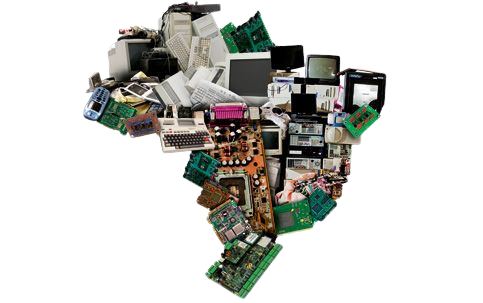
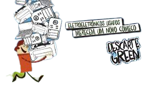

CURIOSIDADE
de acordo com dados levantados pela Green Eletron, em uma pesquisa realizada aqui no Brasil com 2 mil pessoas, 23% dos brasileiros entrevistados não sabem o que é lixo eletrônico e nem conhecem como é feito seu processo de descarte. Por isso, hoje eu vim explicar para vocês o que é lixo eletrônico e como você pode descartá-lo devidamente. Confira logo abaixo nas próximas linhas!
DESCARTE CONSCIENTE
Com o avanço cada vez maior da tecnologia, é comum que o descarte de aparelhos e equipamentos aumente também. Porém, esse lixo eletrônico é um problema crescente em nossa sociedade devido ao descarte incorreto no meio ambiente. Saiba mais sobre esse importante assunto e aprenda como fazer o descarte consciente!
O QUE É LIXO ELETRÔNICO
Termo usado para se referir a todos os equipamentos elétricos e eletrônicos, suas partes e acessórios, que foram descartados como resíduos, sem a intenção de reutilizá-los. Também conhecidos como e-lixo ou ainda, Resíduos de Equipamentos Elétricos e Eletrônicos (REEE).
A categoria inclui “produtos da linha branca”, como refrigeradores, máquinas de lavar e micro-ondas, além de computadores, celulares, tablets, drones, pilhas, baterias, cartuchos e toners.
E se você está se perguntando sobre os itens do dia a dia profissional, saiba que muitos deles são considerados lixos eletrônicos, como: furadeiras e parafusadeiras, lanternas recarregáveis, serras, lixadeiras, aspiradores de pó, máquinas de corte e outras ferramentas elétricas, e ferramentas para cortar relva ou para outras atividades de jardinagem.

QUAIS SÃO OS RISCOS AMBIENTAIS DE NÃO REALIZAR O DESCARTE CORRETO?
Quando os equipamentos estão intactos, não apresentam danos imediatos ao meio ambiente. Porém, caso ele tenha sido aberto para recuperar algum material interno e/ou seja descartado sem o devido cuidado, as substâncias e materiais da sua composição podem, sim, produzir danos importantes ao meio ambiente. Diferente do que se pode pensar, o desmonte não facilita o trabalho das recicladoras e pode ser perigoso, resultando na contaminação de solos, mananciais e no surgimento de doenças.
A maioria das pessoas não descarta o seu lixo eletrônico de forma correta pelo desconhecimento do perigo que este lixo traz para o meio ambiente e para nós mesmos.
ONDE POSSO DESCARTAR?
Muitas cidades já dispõem de iniciativas de coleta e reciclagem de resíduos eletrônicos, como empresas cooperativas que atuam na reciclagem desse tipo de material, sem que haja agressão ao meio ambiente. Informe-se e conheça qual a melhor maneira de realizar o descarte consciente onde você mora.

.png)